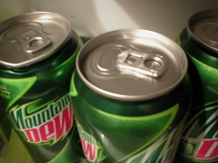
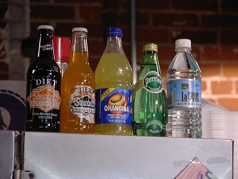
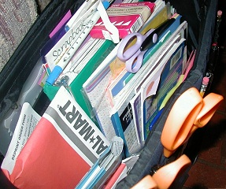

Standard recyclables are any recyclable that is typically handled by a group or government program that utilizes trucks or a pick-up service to collect them. Often times they are picked up in unison with other kinds of waste, but in separate containers.
Metals
Metals are any item under a standard size that has been used in a household manner, including:

Cans
Metal Bottles
Tin Foil (That has not been soiled by food)
Empty Aerosol Cans
And anything else your recycling company allows.
Plastic/Glass
Plastic and glass recyclables are one of the most important things to be recycled, as most of them are not bio-degradable, and can sit in landfills for several centuries at a time before decomposing, Including:

Milk Jugs
Plastic/Glass Bottles
Plastic Bags (Where applicable)
And any other plastic container with a 1 or a 2 on the bottom (Sometimes 5 as well depending on your city)
Papers
Paper recyclables are important because they save trees from being needlessly cut down, thus saving the environment, Including:

School Paper
Printer Paper
Newspapers
Cardboard
And anything else your recycling company allows.
How to know if it's a Recyclable?
All of the above items mentioned are considered standard recyclables. If you would like more information on recycling, contact your local state recycling center or visit our contact page for specific questions.